〇convert_toolを使用しなくなりました Cubism3SDKからインポート時に、Unityで読み込めるような形式になるため、convert_toolは使用せずモデルファイルをフォルダごとそのままResoucesフォルダにドラッグ＆ドロップするようになりました。 〇モデルにアニメーションさせるためのlive2d_motionタグの実装変更を行いました 2.1時点ではstorageで.mtnデータを呼び出す形式でしたが、3からメカニムを使用するため、MMDモデルのsd_animタグと近い動作をするように統一しました。 そのため、MMDモデル同様、AnimationControllerを作成して頂き、boolでアニメーションを切り替えることとなりました。 〇アセットパッケージでのインポートに変更 2.1までは.dllとShaderが入ったResoucesフォルダのインポートがありましたが、3からはアセットパッケージでの配布となるので、各種、必要なものが入ったアセットパッケージでのインポートという形式に変更となりました。 〇対応モデルについて Live2DCubism2.1Editor以前で作成された.mocファイルは対応しておりません。 Live2DCubism3Editorで作成された.moc3モデルのみ対応しています
注）Live2Dを使うためにはジョーカースクリプト 0.4.1以上、Unity5.6.0以上が必要です
添付されているアセットパッケージをジョーカースクリプトのプロジェクトにインポートしてください。
【重要】
インポートする前に、以下の２つのファイルをプロジェクトから削除してからインポートして下さい。
・JOKER/Scripts/Novel/Components/Live2dComponent
・JOKER/Scripts/Novel/ObjectSet/Live2dObject
この２つのファイルは最初からJOKERSCRIPTに含まれており、インポートで置き換える必要があります。
次に、Live2DのページからSDKを入手します。
いくつか項目がありますが、Cubism SDK for Unityという項目のボタンをクリックし、ダウンロードします
https://live2d.github.io/
利用規約に同意した上で、SDKをダウンロードしてください。
ダウンロードしたアセットパッケージをドラッグ&ドロップでジョーカースクリプトのプロジェクトにインポートしてください。
【重要】
SDKはインポート直後ではdllが読み込まれないため、一度Unityを再起動する必要があります。
それでは、ゲームに登場させるLive2Dモデルを準備しましょう。
今回はLive2D公式サイトで配布されているデータを使って試してみたいと思います。
http://sites.cybernoids.jp/cubism2/samples
魅力的なデータが並んでいますが、今回は「イプシロン」というモデルを使ってみたいと思います。
ダウンロードボタンを押してください。
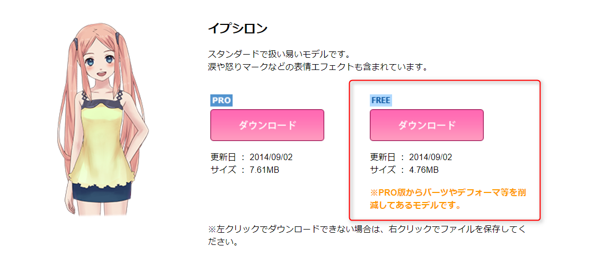
Cubism3SDKはCubism3Editorからエクスポートされたモデルしか対応していません。
そのため、Live2Dの公式サイトから、Cubism3Editorをダウンロードし、インストールしてください。
Cubism3Editorをインストール後、Epsilon_free.cmoxを開き、「Epsilon_free」というフォルダを新規で作り、
moc3ファイルを書き出します。
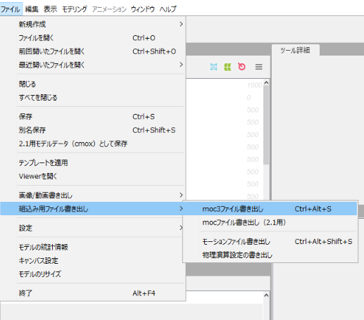
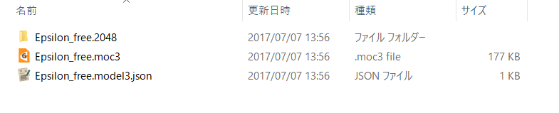
また、同じようにcanxもCubism3Editorにインポートし、「Epsilon_free」フォルダの下に「motions」フォルダを作成し、
モーションシーンを書き出します。
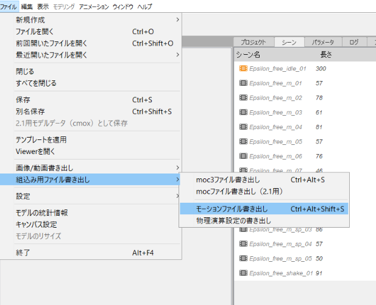
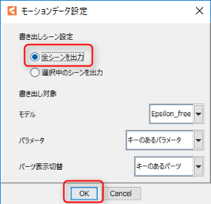
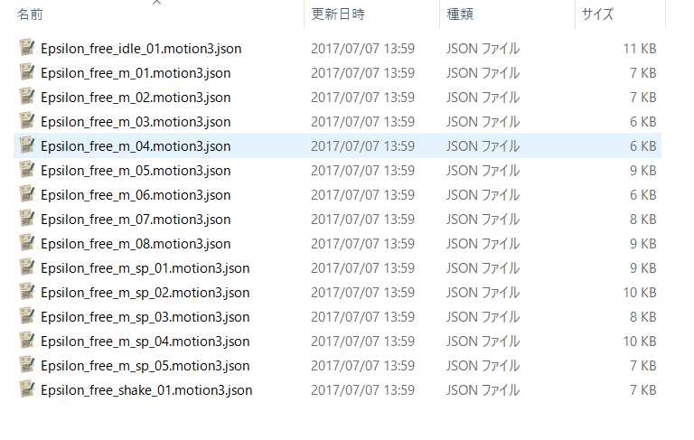
次に、JOKER_GAME/live2d内で右クリックを押してNew_Folderを選択し、Resourcesと名前を付け、作成してください。
「Resources」フォルダに先ほど作成した「Epsilon_free」フォルダに配置してください。
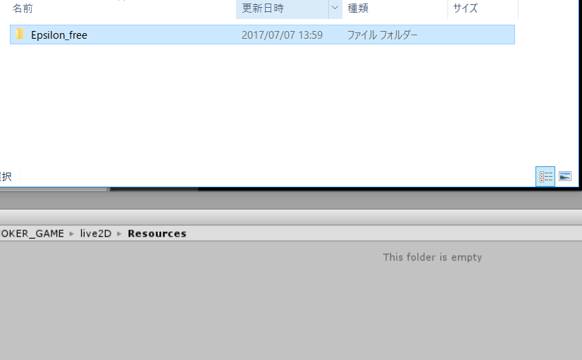
すると、インポートしたEpsilon_freeのフォルダ内に、プレハブが生成されています。
このプレハブをHierarchyにドラッグ&ドロップで追加してください。
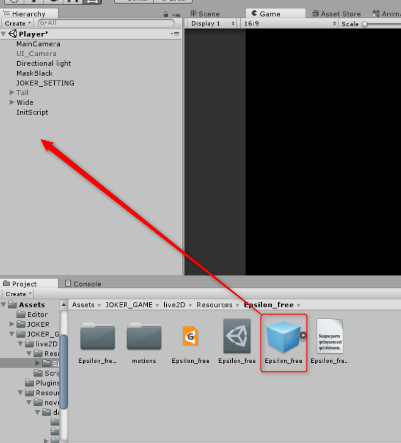
その後、Hierarchyに追加したモデルを選択(画像①)し、
JOKER_GAME/live2d/Scripts内にあるFadeInOut.csをInspectorにドラッグ&ドロップしてください(画像②)
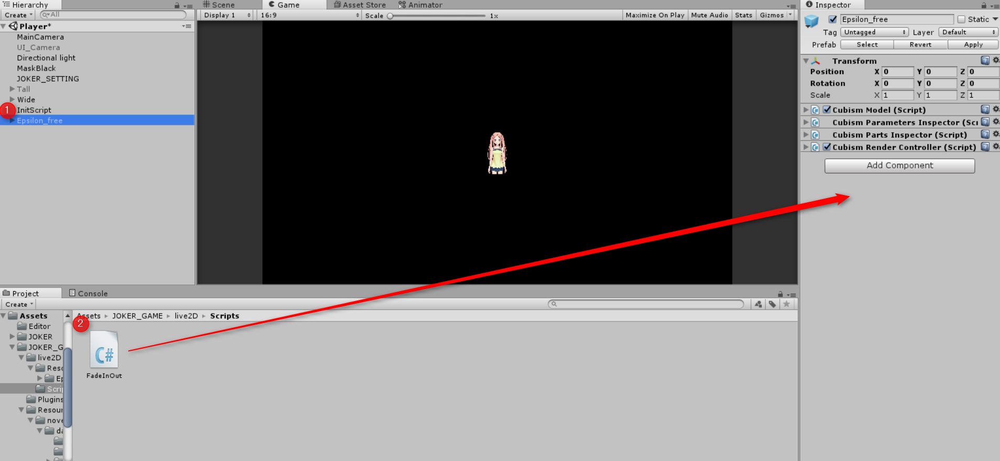
このままでも表示できますが、アニメーションが再生できません。
そのため、アニメーションを設定します。
Cubism3SDKから表情やポーズはアニメーションの内部に統合される形になったためです。
JOKER_GAME/live2D/Resources/Epsilon_free/motionsフォルダを開きます。
その後、Hierarchy上にあるEpsilon_freeを選択(画像①)し、Epsilon_free_idle_01.animをドラッグ&ドロップでEpsilon_freeのInspectorにアタッチします(画像②)
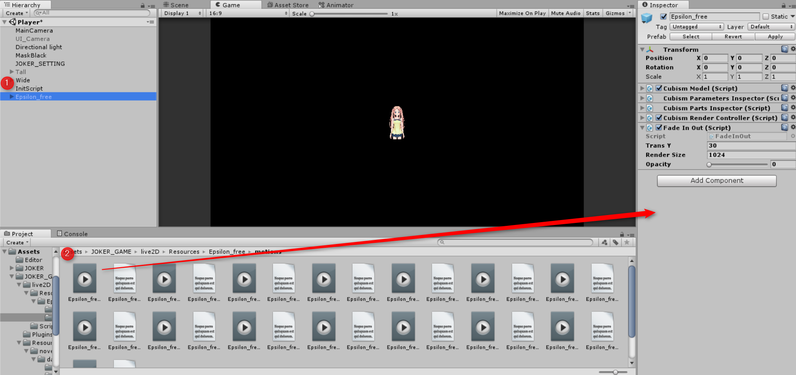
最後にヒエラルキーから Epsilon_free をドラッグ＆ドロップでJOKER_GAME/live2D/Resources/ へもって行き、プレハブ化します。
ヒエラルキーに残った Epsilon_free は削除しておいてください。
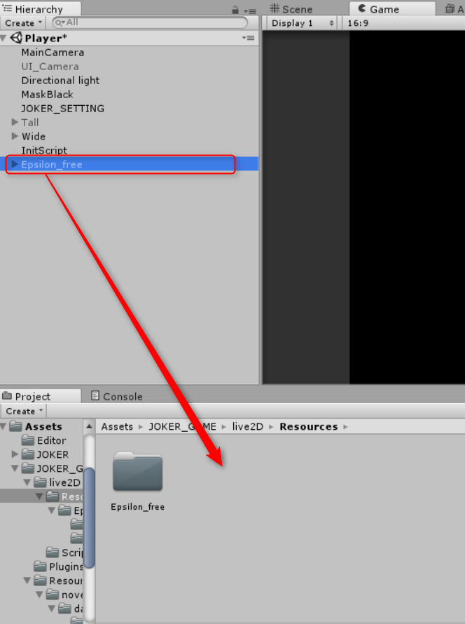
以上でLive2Dモデルを使う準備は整いました。
シナリオで以下のスクリプトを記述してください。
[live2d_new name="Epsilon_free" storage="Epsilon_free"]
[live2d_show name="Epsilon_free" ]
ゲームを開始してみましょう。
モデルが画面に表示されましたね。
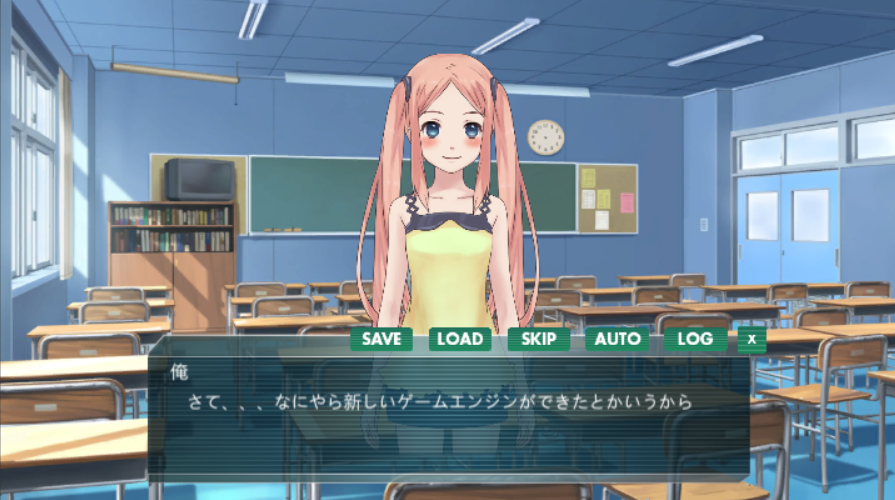
次は、好きなタイミングでキャラクターにポーズをとらせるといった、アニメーションの設定を見ていきましょう。
次：Live2Dモデルをアニメーションさせる